What Brings You Back
Game Design
Context
Brief Narrative Description
In What Brings You Back you play as a depressed teenager, who lost his happiness and must find it back! Through photographing his favorite park he slowly starts seeing beauty in life again and getting his happiness back. As you do, the colour of the world comes back and his world view changes.
Brief Gameplay Description
The game is defined by getting riddles about objects in the park, trying to find them, and taking pictures of them. The game starts in Black and White and slowly, as you get more riddles right, gets its color back. As you guess riddles you store them in your notebook along with the introspection your character made about them.
Game Genre: Puzzle-Adventure, Narrative-driven
Game Type: Single-player
Pitch phrase: Find your happiness again through the eyes of your camera!
Game Design Pillars: Intriguing, Calm/Cozy, Photo-Journaling
Team: 3 people (1 Game Designer/Project Manager/Programmer; 1 Game Artist; 1 Music Composer/Sound Designer)
My role: Game Designer/Project Manager/Programmer
Development time (up to vertical slice): 5 months
Game Engine: Unreal Engine 5
Other programs used: Notion, Google Docs, Excel, Powerpoint, Blender, Adobe Substance Painter, PureRef, GitHub, Adobe Photoshop
Target Audience
Target Audience
Region: Western Europe
Gender: Women
Age: 18 to 23 year olds
Bartle’s Player Profile: Explorers
Self-Determination Hexad: Philanthropists
Quantic Foundry: Players who fit into the Immersion-Story, Creativity-Design, and Creativity-Discovery profiles.
To read more about why this is our target audience, make sure to read this document that explains it!Marketing Persona
Name: Maria do Carmo
Age: 20
Gender: Woman
Profession: University Student
Influences - Movies
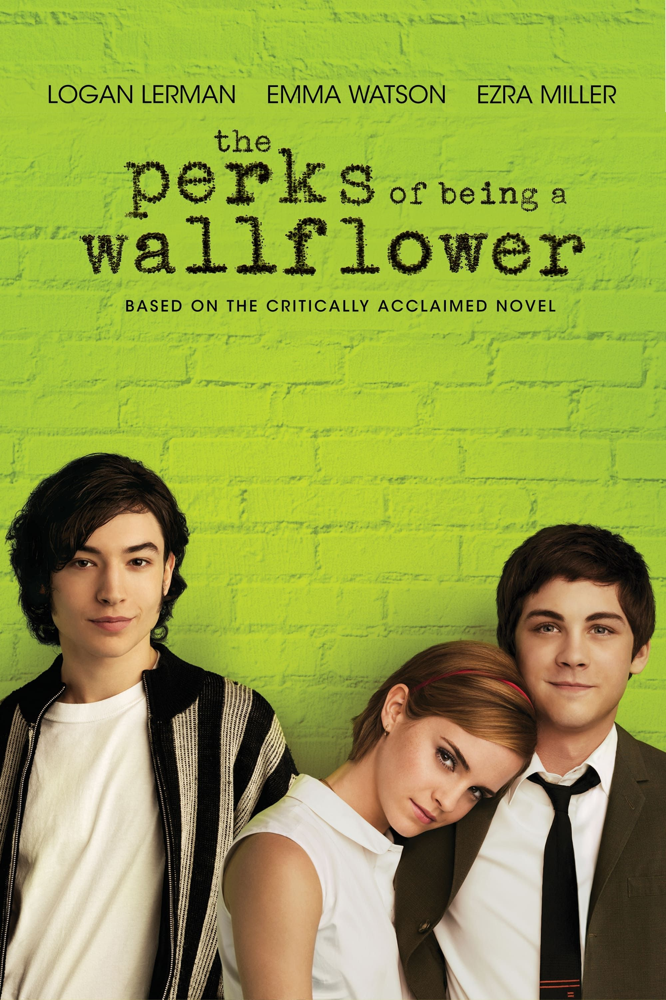
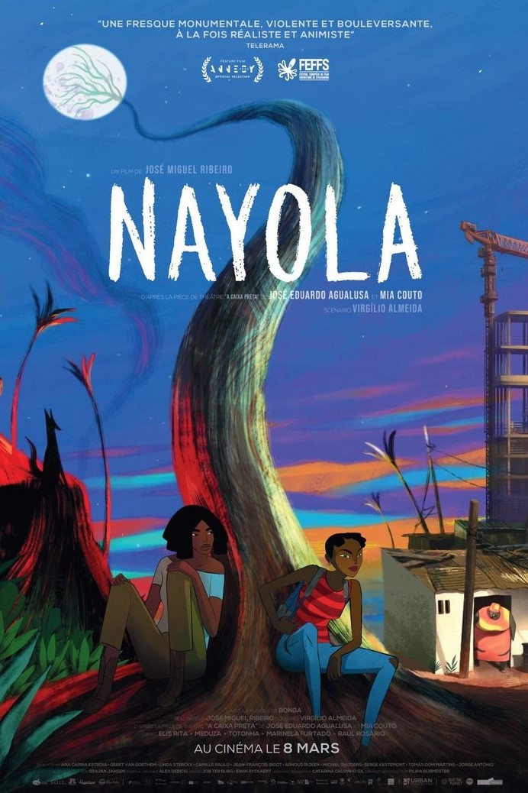
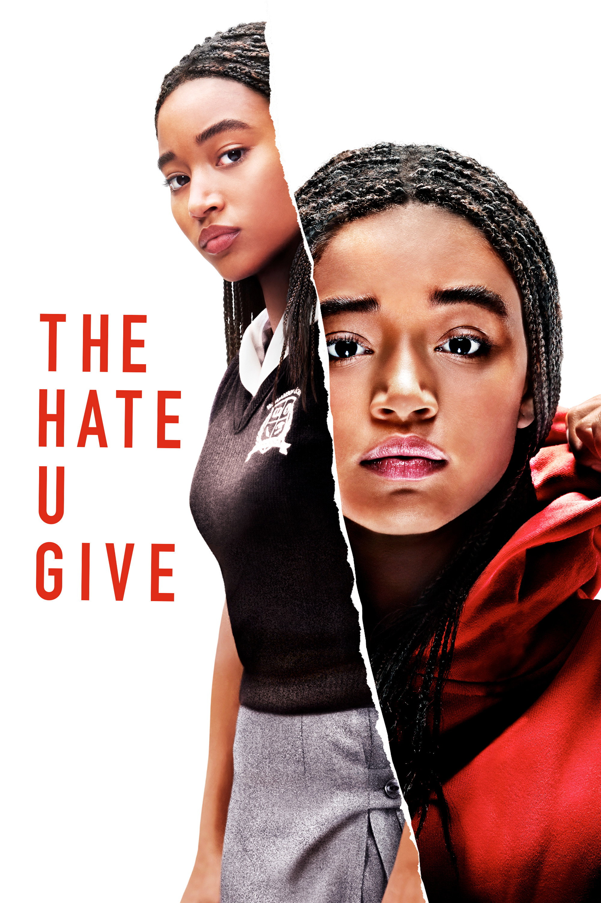
The Perks Of Being A Wallflower
Nayola
The Hate You Give
- A game that has historical relevance
- A cultural rich narrative
- An emotional story
- A character that tries to find themselves and accept who they are
- Visually, stunning art style with beautiful landscapes
- An emotional narrative that targets mental health
- Complex characters in their personality and in their backstory
Influences - Music
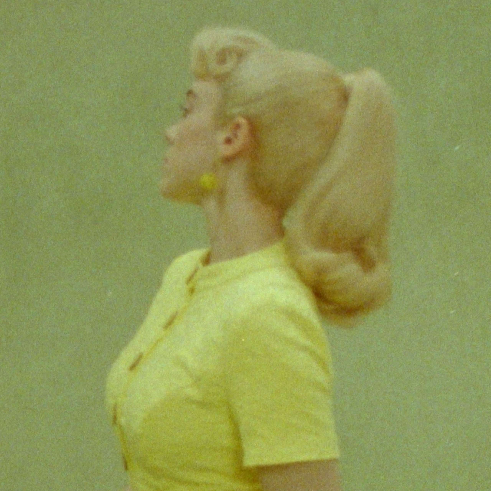
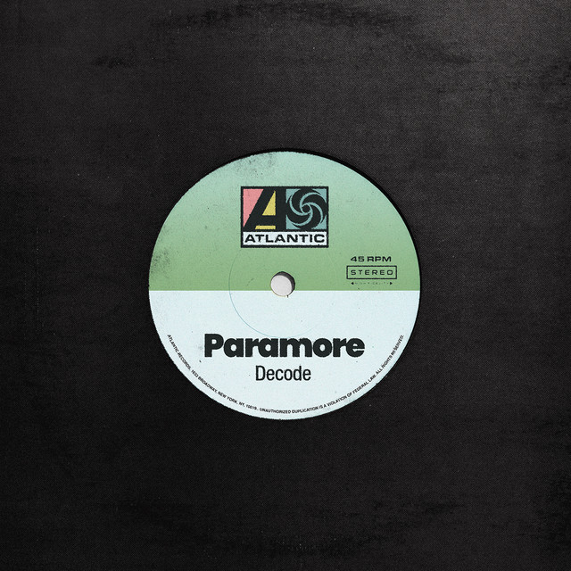
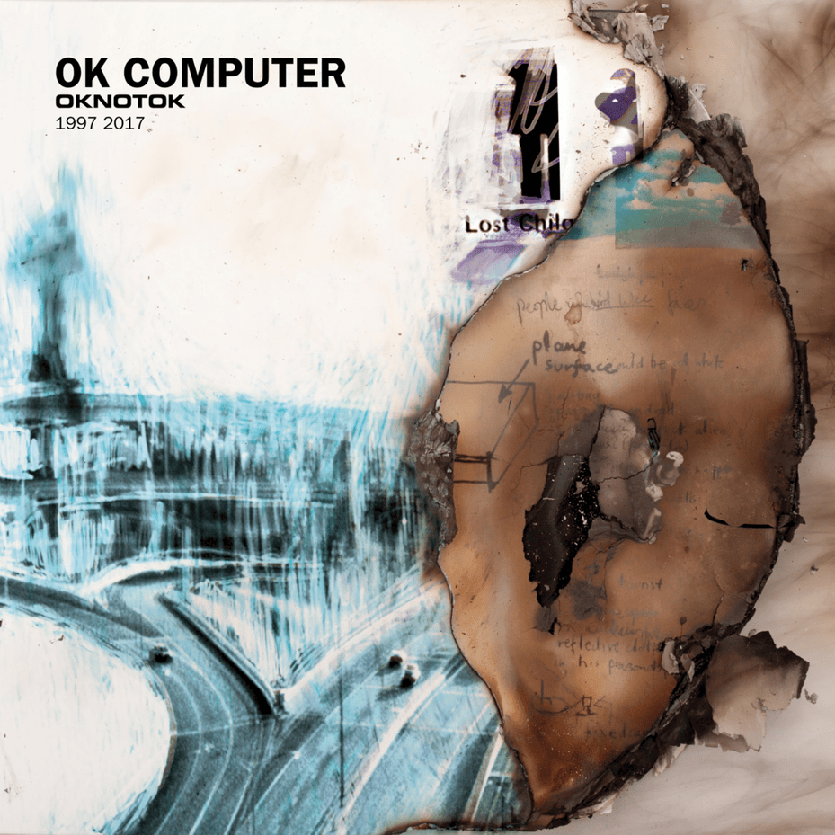
What Was I Made For - Billie Eilish
Decode - Paramore
Let Down - Radiohead
- A narrative that depicts strong emotions as they are, the ugly and real part of depression/losing yourself
- A game that allows you to express yourself emotionally
- A game that depicts a character grieving something, preferably the loss of someone
- A narrative with a character that struggles to find their place in the world now that they are “alone”.
- An emotional narrative that puts you very close to your feelings and allows you to be vulnerable with its themes
- A narrative of personal distress but with hopes to get better
Influences - Games
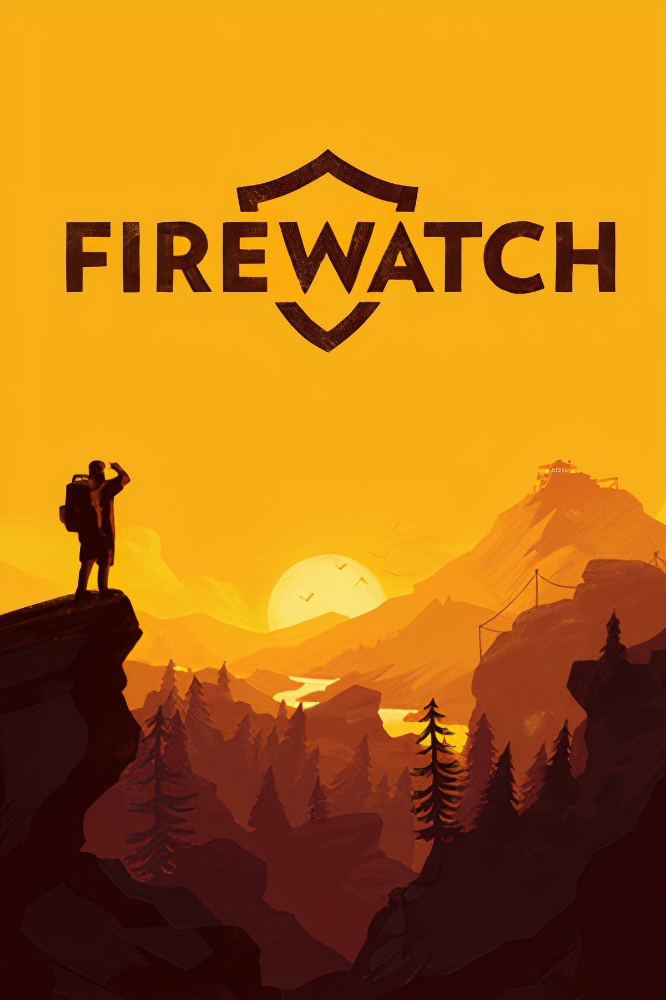
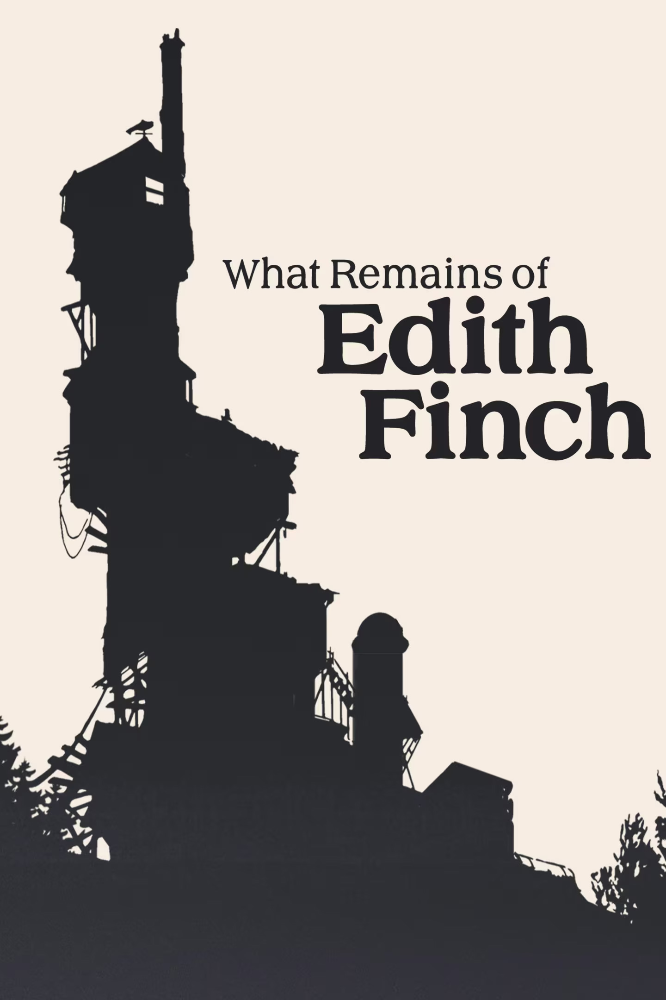
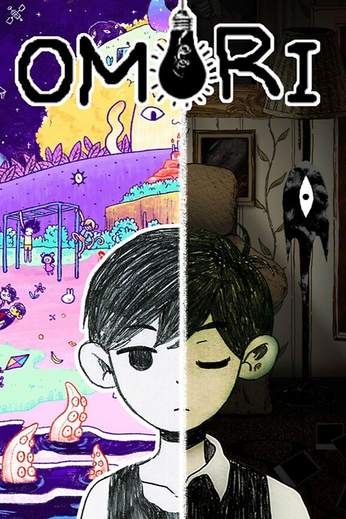
Firewatch
What Remains Of Edith Finch
Omori
- A narrative driven game
- A narrative that explores a lot of mental health related themes
- A game about understanding your past
- A game that has an intriguing narrative that tackles deep themes such as running from your problems
Influences - Books
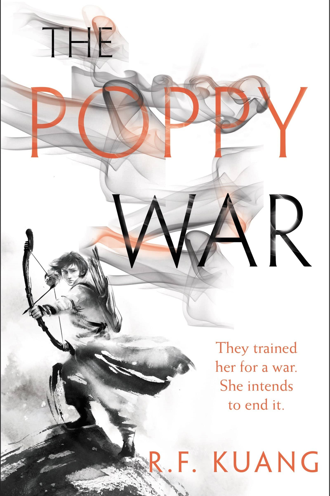
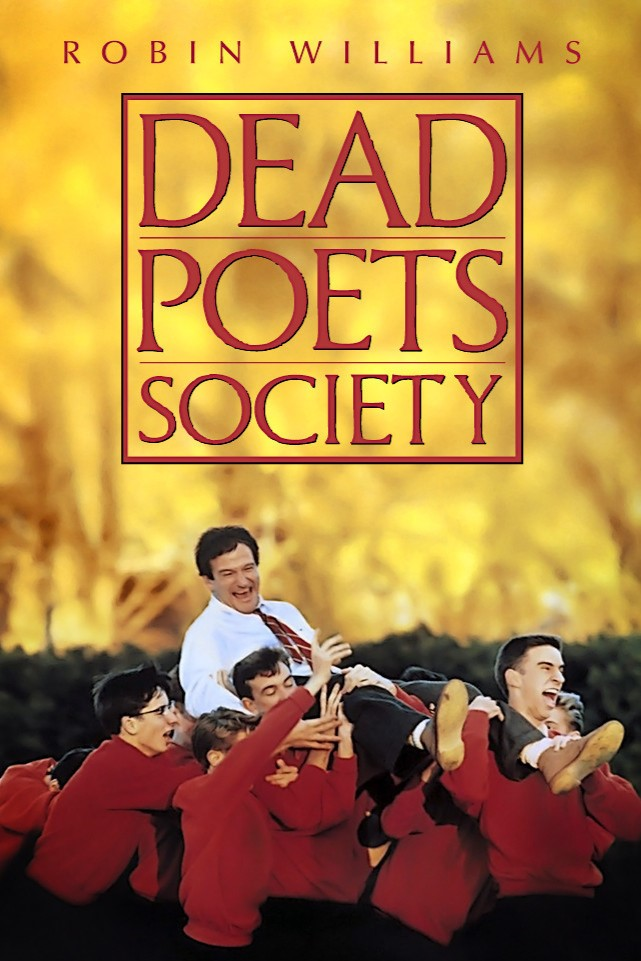
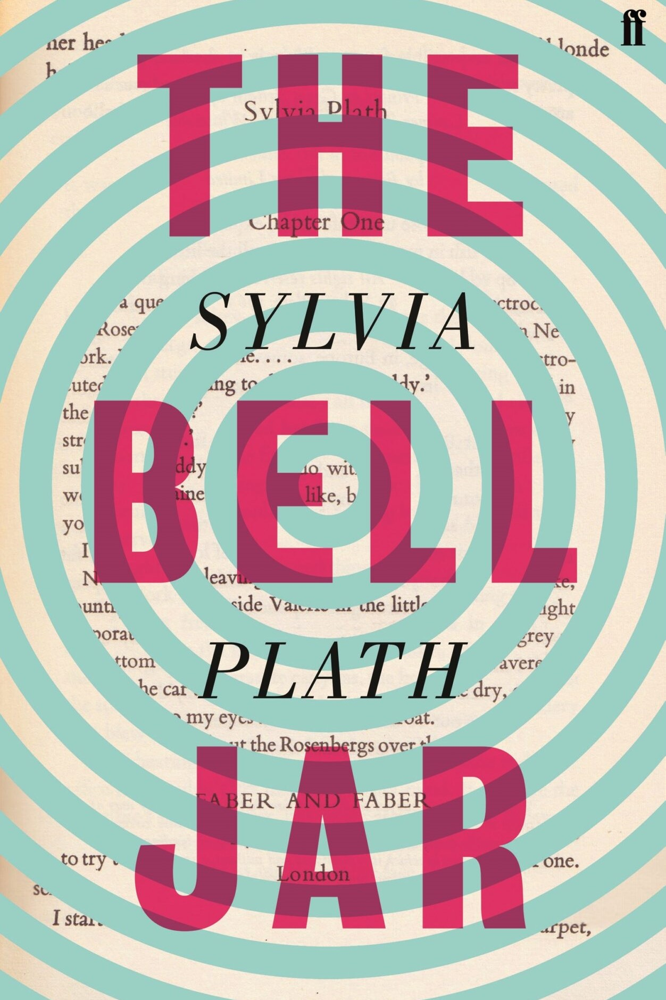
Poppy War - R. F. Kuang
Dead Poets Society - Robin Williams
The Bell Jar - Sylvia Plath
- A game with a narrative that depicts the true, ugly and raw side of struggling with a mental illness
- A game that depicts the struggles of figuring out where you fit in society and its expectations
- A game narrative that seems to be inspiring and beautiful but still depicts the darkness of the world and the mental health struggles
- Beautiful landscapes in the game
- A game that depicts dark themes of human nature and mental health struggles
- A game with a complex narrative
Influences - Social Media
- A game related to art in some way
- A game that focuses more on visual experiences than mechanical experiences
- A game that focuses a lot on the visual aspect and visual entertainment
- A game where you can be creative and express yourself
Design Research
Lousã: My Father Once Told Me
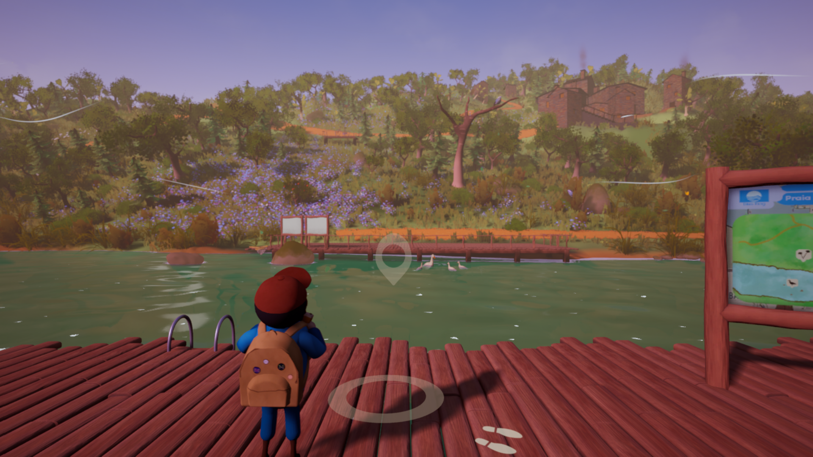
Team Size: 5
Development Time: 7 months
Publish Date: Jul 13, 2022
Average Session: 30 min.
Platforms: PC, PS4, Nintendo Switch
Description: Live the emotional adventures of a father and son in the Lousã's forests, Portugal. Hugo is looking to escape from the woes of daily life. It's not easy growing up. Thankfully though, dad takes him hiking regularly. Walking around Lousã's hills is sure to clear Hugo's head and dad is there to fill it right back up with some wisdom. Father and Son sow the seeds of the once and future sense of nostalgia. A fulfilling yet brief respite from all the noise, the exhaust, the burden of the modern age. It's just us...the water...the wind. Take your time.
Through Your Eyes
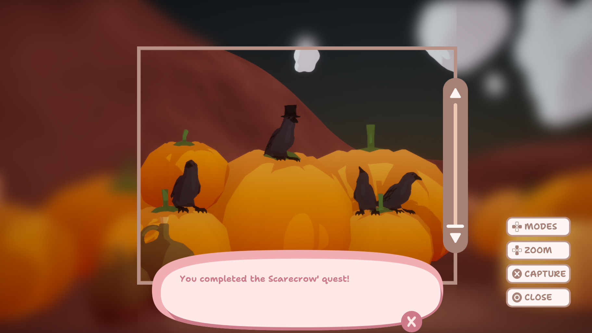
Team Size: 7 (1 Game Designer, 1 Artist, 2 programmers, 3 sound designers)
Publish Date: Jul 12, 2024
Average Session: 30 min.
Platforms: PC (windows)
Description: Through Your Eyes is an Atmospheric Narrative-Driven game where you play as a sheep who finds a mp3 player in a forest while exploring. When listening to it, it’s possible to hear someone describing something with a lot of passion. It motivates the little sheep to capture what she interpreted from the audio with her camera, as she learns more from the unknown voice through the audio device There are some areas that require the sheep to upgrade her camera in order to access map parts that she can’t reach. The objective is to take photos of objects that are in the map. In this game, the player will experience life through a different perspective and learn the importance of looking outwards.
TOEM: A Photo Adventure
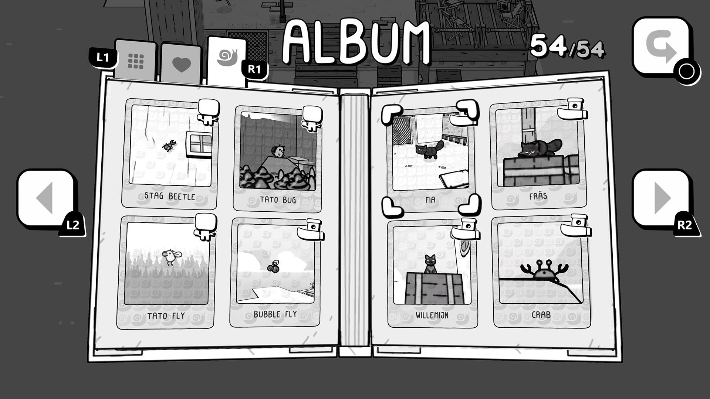
Team Size: 5
Publish Date: Sep 17 2021
Average Session: 5 hours
Platforms: PC, PS5, Nintendo Switch, Xbox
Description: Set off on a delightful expedition and use your photographic eye to uncover the mysteries of the magical TOEM in this hand-drawn adventure game. Chat with quirky characters, solve their problems by snapping neat photos, and make your way through a relaxing landscape!
Game Narrative
A depressed teenager is losing himself in depression. The world is losing colour; the music that used to brighten his days now only makes them somber… He’s losing hope that he can be happy again, the meds only make him numb and he misses emotion.
He decides to go to the park to take some pictures. Photography, he used to be so good at it, he used to capture the beauty of nature and the colour of life… Now he seems to only capture how miserable and insufferable it is…
Miguel always takes his notebook everywhere with him. The notebook is filled with backstory of his life and the riddles. The riddles were things he and his best friend used to write to each other about the park when they were younger. Now he looks back at them and tries to remember what possible object they might correspond to.
But something is changing, as he takes pictures he starts to get that feeling back. The feeling that he can still feel emotions. So he braces. At first all the emotions the photos capture are pain and darkness. But as he continues he starts to capture what still makes life beautiful and happy. Because what the world is or isn’t, isn’t written on stone, it’s all about perspective.
Embarking on this journey of discovery will make him understand that the world isn’t only black and white, it is a full spectrum, sometimes the colour fades when you are sadder, but it's all a matter of perspective. The colour didn’t actually fade away, you just forgot to look for it. Don’t get stuck on one perspective on life, don’t get stuck on the rabbit hole, embrace life as it is, all and nothing at once, pain and glory, bad and good.
To read more about the game's narrative, make sure to read this analysis that explains it!Theme & Game
The main goal of our game is to bring awareness to depression, more specifically, in teens. In this game you follow a 16 year old boy that is currently struggling with depression.
Theme & Colour
This feature works as a representation of Miguel's mental state. The idea is that the world starts in b&w, and as the riddles get solved, the colour starts slowly coming back. This is to show that Miguel, our character that has depression, is slowly getting better as he starts solving his childhood riddles and reflecting upon his life.
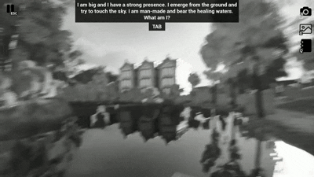
Theme & Music
Similar to the approach regarding the colour, we also wanted the game music to be affected. This was in hopes to represent how heavy thoughts can get, that not even music seems to enter your system. And so we took a fun approach to music. When the character is depressed, the music is more melancholic, very subtle, and mostly obfuscated by noise. But as the character starts healing, the music starts to be more uplifting, more instruments, and less noise.
Theme & Narrative
This game’s narrative and experience was designed to be able to really be able to raise awareness regarding repression, even to someone who has never experienced it. I had two minor goals. 1- make the player see how depression affects one's life. 2- make the player feel how depression impacts one's world.
To satisfy the first goal we focused mainly on narrative. By trying to show to the player the character's state of mind, how he analyses the world around him, and how he interprets his past experiences.

And to satisfy our second goal, we focused on the gameplay experience. We wanted the player to feel like something was missing when the character was depressed. We wanted the player to feel the change from depression to no depression. So we came up with character interpretations of the riddles. When the character is more depressed, the analysis he does of a riddle is more pessimistic. But when he is less depressed, the analysis he does is more optimistic.

Rational Game Design
Game System
This is the puzzle game system, it consists of the core gameplay of the game, which is puzzle solving. The mechanics to solve the puzzle are analysing riddles and taking pictures to the objects the riddles refer to. There are three player skills, precision, observation and balancing decisions, one physical and two mental ones, respectively.
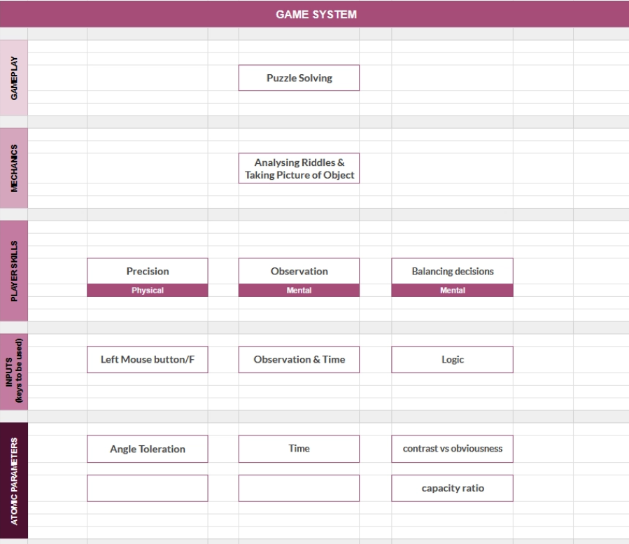
Precision Player Skill
For the Precision player skill the input is the left mouse button or the “F” key. And the atomic parameter is angle toleration. Angle toleration in the way the game measures if the photo contains the target object in it or not. Is the object being in the screen enough or does it need to have a specific percentage in the image, or the full object, etc…
The idea of the angle toleration for our game, if we have a zoom feature, would be that the object needs to be X% visible in the image and, to occupy Y% of the photo’s space. This is so that the player doesn’t accidentally take a picture of the object by it being accidentally in frame.
If we can’t implement the zoom mechanic this angle tolerance would be defined by how centered the object is in the frame. Ideally the first option is what we want, this second one is just in case something goes wrong with the programming.
Observation Player Skill
As for the observation player skill, the inputs are observation and time; basically how long the player takes to analyse the environment surrounding them. And the atomic parameter for this player skill is time. Does the player have time restrictions to take the photo or do they not?
For our game, the idea for the observation & time atomic parameter would be that there is no time restriction. This is so that we keep our game aimed with the design pillars we defined. One of these pillars is cozyness, and since we want to make a cozy game, pressuring the player with time kind of goes against the purpose of relaxation and just enjoying the gameplay stress-free.
Balancing Decisions Player Skill
As for the “balancing decisions” player skill, the input is logic; this is regarding the analysis of the riddle received and conjugating that information with the environment that surrounds you. This player skill has two atomic parameters, “contrast vs obviousness” and “capacity ratio”. "Contrast vs obviousness" is related to how obvious the riddle is or not, and the "capacity ratio" is related to how many pictures the player can take.
For our game, regarding the contrast vs obviousness we will be developing riddles and testing them to see their difficulty. As for the capacity ratio, we are going to have an inventory system where each photo gets uploaded; this inventory has a limited amount of slots for photos, so if you take a lot of photos that are not of the object you will have to delete some photos.
Ingredients
To help with the development of this game I made some ingredients to help my team in the process. These ingredients are basically guidelines for the game elements. For example, how tall is the main character? How tall should the trees be in comparison? Etc…
In the images below you can see a few examples of these ingredients I made:
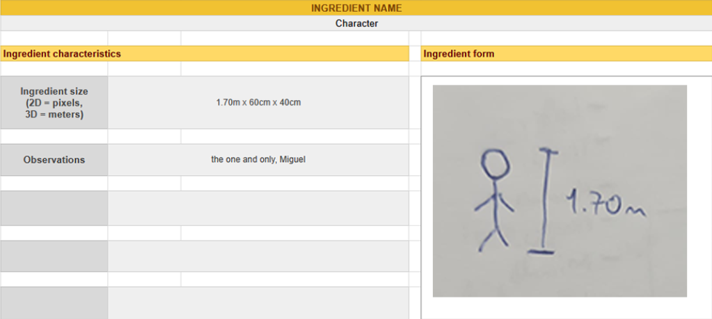
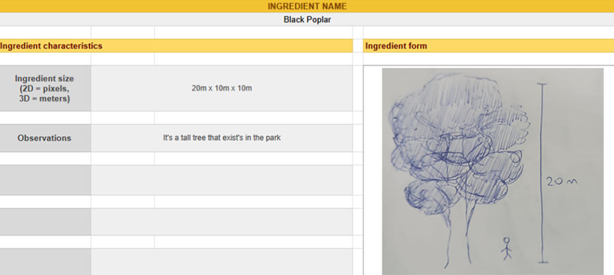
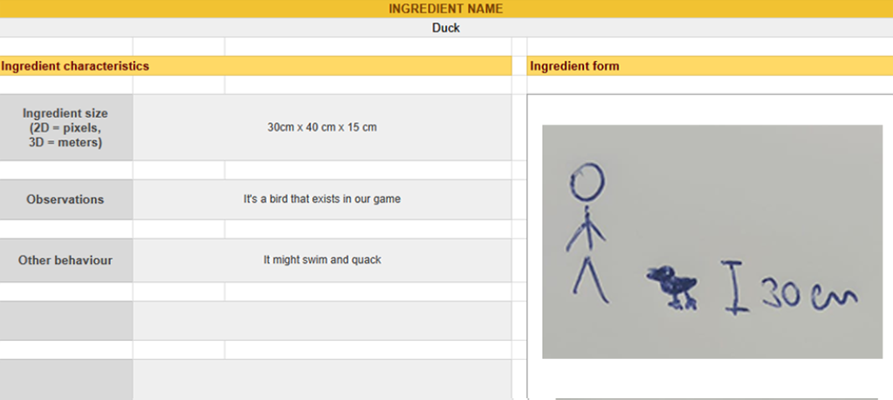
Signs and feedback
The following schemes explain the intended signs and feedback intended for our game.
Enter Photo Mode
When you enter photo mode:
- You hear a camera turning on Sound
- The UI changes from the standard view UI to photo mode UI
- There’s an animation of the screen fading from black to the photo mode UI
Exit Photo Mode
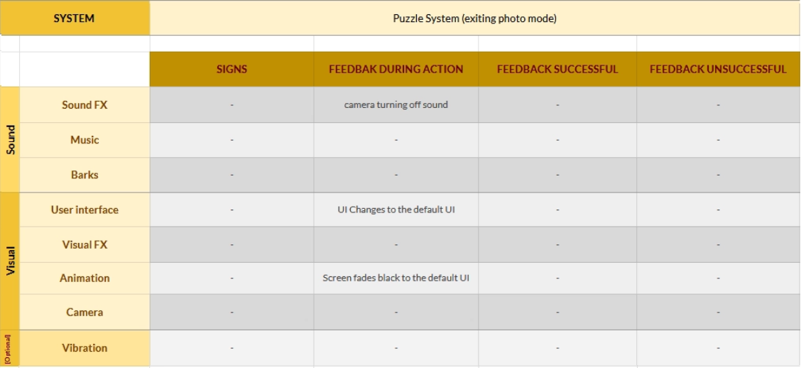
When you exit photo mode:
- You hear a camera turning off Sound
- The UI changes from the photo mode UI to the standard view UI
- There’s an animation of the screen fading from black to the standard view UI
Take a Photo
When you take a photo:
- You hear a camera taking a photo Sound
- There’s an animation of the camera capturing the photo (like digi cams do)
When the photo you took corresponds to the riddle, on top of the feedback for a photo you also get:
- A notebook writing sfx
- The music gets more uplifting
- The character says something like “Yes That’s it!”
- The photo that was taken remains on the screen for a few seconds as the character gives the feedback about it.
- After the introspection of the photo, the notebook is opened in the riddle analysis page and you see the photo there, as well as the character feedback on it, and the new narrative that you have unlocked.
- The game saturation of the game goes up a bit
- The object to which the riddle belongs to gets full saturation
When the photo you took doesn’t correspond to the riddle, on top of the feedback for a photo you also get:
- The character saying something like “Hmm, I don’t think that fits the riddle”
- A dialogue box appears with the previous line
Get a Hint
PS: This feature is not implemented in the vertical slice
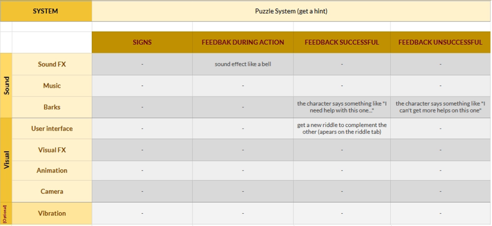
When you press the button to get a hint (H):
- You hear the sfx of a bell
When you still have hints to use, on top of the feedback from pressing the button you also get:
- The character says something like “I need help on this one…”
- You get a "no riddle selected" message on the riddle tab (previously another riddle would be assigned automatically)
When you no longer have hints to use, on top of the feedback from pressing the button you also get:
- The character saying something like “I can’t get more help on this one”
Gameplay Loop
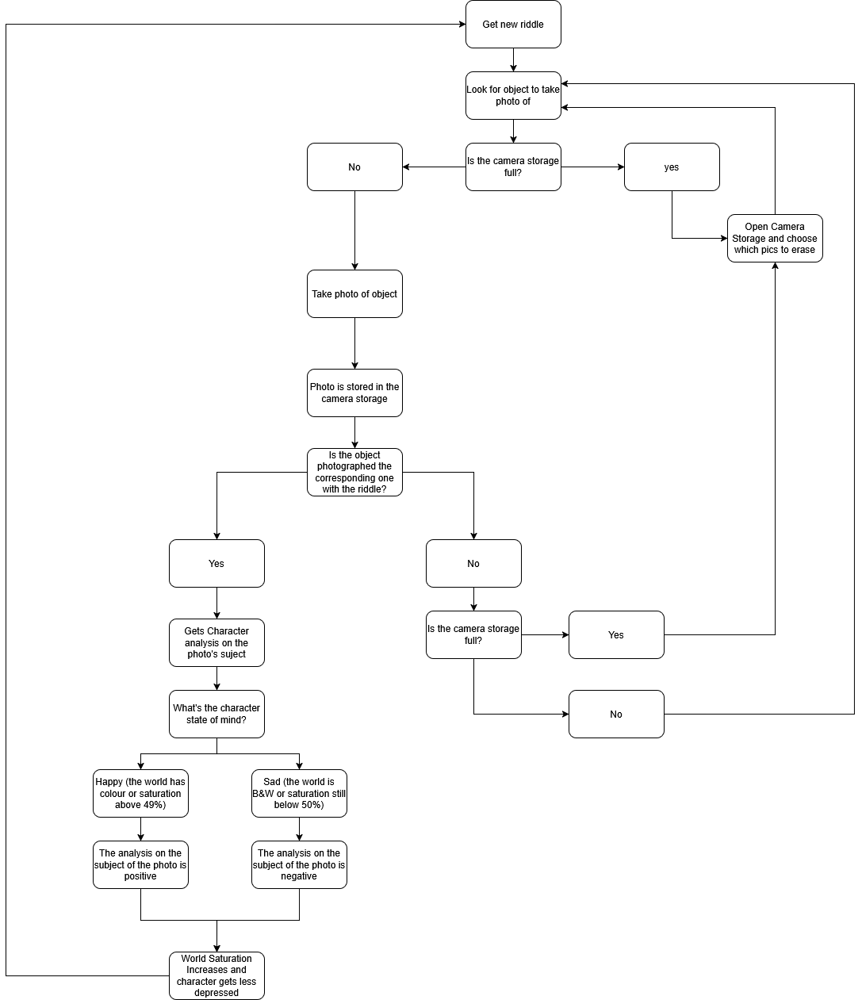
As you can see in the image the loop starts with the player getting a new riddle. Then the player interprets the riddle and looks for an object in the environment that fits the riddle. Once the player chooses an object to take a photo of, we need to know if the camera storage is full or not.
If the storage is full the player must open the camera storage and choose which photos to erase, so that they can look for an object and actually take a photo. And if the storage of the camera is not full, the player takes a photo of the object, which is saved into the camera storage.
Then we need to know if the photo contains the object that the riddle refers to. If it doesn’t contain the object the riddle refers to, we need to know if the player still has storage in the camera. If they still have space, they look for another object to take a photo of, but if the storage is full they have to delete some photos first.
On the other hand, if the photographed object is the object corresponding to the riddle, the player gets a character analysis on the object and the riddle. This is a way to incorporate the narrative into the game and convey the character’s introspection on life. The type of analysis the character makes on the object depends on his state of mind. Whether Miguel (the character) is depressed or has started overcoming depression. If he is depressed the analysis is negative, more somber. But if he is no longer depressed, the analysis is positive, more jolly.
And lastly, to close the loop, once the player gets Miguel’s analysis the world gets more saturation as the character starts slowly to overcome depression. After this saturation increase happens, you get a new riddle and the gameplay loops again.
Retention Loop
Loop 1 - While playing a chapter
In the image below we have one of the two retention loops in our game. This one is the retention loop while playing in a chapter.
When you are playing in a chapter you get a riddle. Then you have to look for something to take a picture of, something you think the riddle corresponds to. After you have picked an object to take a picture of, you take the picture. If the object matches the riddle you get the first way of retention in our game, you unlock more parts of the narrative and can continue to progress in the gameplay/character’s narrative.
And if the object you took the photo of is an easter egg trigger, you have just experienced the other form of retention. You get something extra hidden from the regular gameplay. This can be extra narrative or a unique interaction; for example you take a picture of a bush and a cat pops out of the bush.
Retention loop resumed:- The object matches the riddle → Unlock more pages in the notebook –> Unlock more narrative
- Easter eggs –> get extra narrative from the default gameplay or Secret action/interaction (ex cat pop’s up out of the bush)
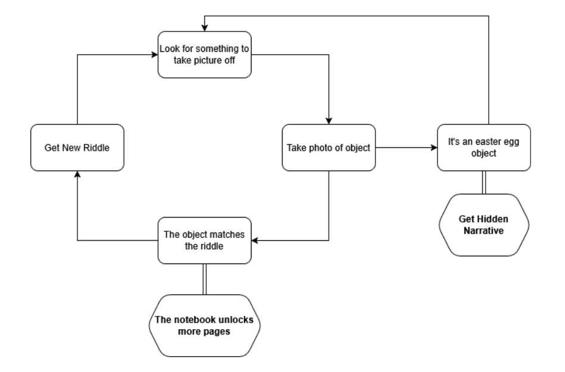
Loop 2 - Across Multiple Chapters
And in the image below we have the other retention loop. This retention loop is related to the progression through chapters.
In this loop we see that when you start a new chapter, you play through it. While you play the chapter you progress in the narrative (previous loop) and so you progress the story in that specific level.
And now the new retention, when you finish a level you unlock the next chapter and you can play it and continue the game’s narrative.
Retention loop resumed:- Play a chapter → Finish the chapter → Unlock a new chapter
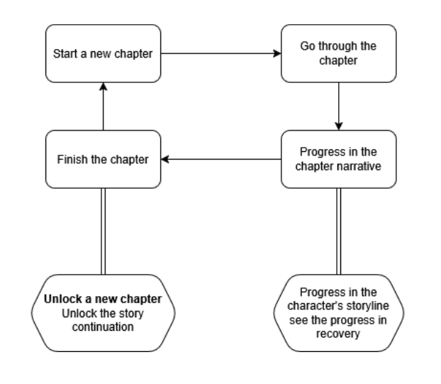
Playtests
In the development of this game’s vertical slice we conducted a few playtest sessions with our target audience, in order to see what could be improved.
Problems Encountered
Riddles
One of the problems pointed out by the testers was how one riddle was too hard to understand if you didn’t know the actual park the game took place in. This is because the first version of this riddle was using clues that you only knew if you had previous knowledge regarding this park.
Upon receiving this feedback it was my task to fix it and reformulate this riddle. My main goal was to focus more on general knowledge of the subject, the building; rather than trying to describe that specific building background story.

Erasing Photos
Another problem pointed out by our testers was the erasing photos mechanic. The testers first contact with the mechanic was messy; since there wasn’t much feedback in the version they tested. Most of the testers erased pictures by accident, and, as expected, this made them a bit frustrated, which was not our goal at all. So our fix for this was to show a trash Icon hovering the pictures, so the player knows that if you press it, it will be erased.
It is important to mention that this is true for our vertical slice only, since the mechanic was supposed to be a bit different in the final game.
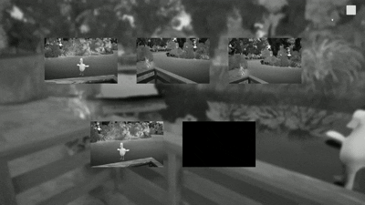
Photo Captured Feedback
And the third example I have of problems we encountered with playtests is the feedback of taking pictures. On the version that the testers tested, when you took a photo you would exit the camera mode. The testers mentioned that this was confusing because they didn’t know if they were taking pictures or not.
We fixed this issue by making a shutter animation when the player takes a photo; and now when the player takes a photo they don’t exit photo mode automatically.
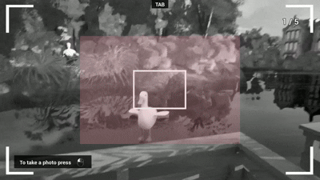
To read more about the playtests and their feedback, make sure to read this analysis! And this playtest document that explains it!UI & UX
Flowchart
In the image below we have our full UI flowchart for our game. But since we can’t see very well what’s in it, we are going to analyse it by parts.
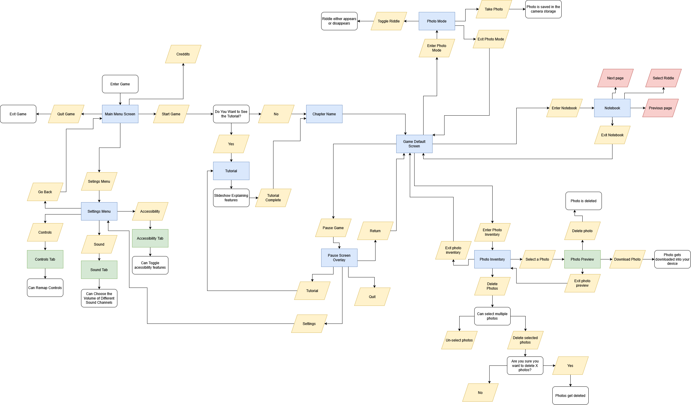
Main Menu
In the image below we have the UI flowchart for the Main Menu. As we can see, the player will be allowed to: Quit the game, see the game Credits, open the settings menu, and start the game.
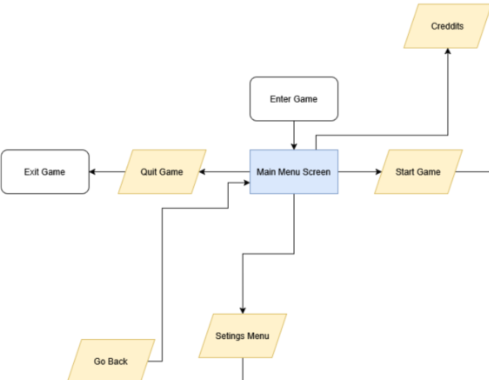
And in the image below we have an early example of the Main Menu's layout.
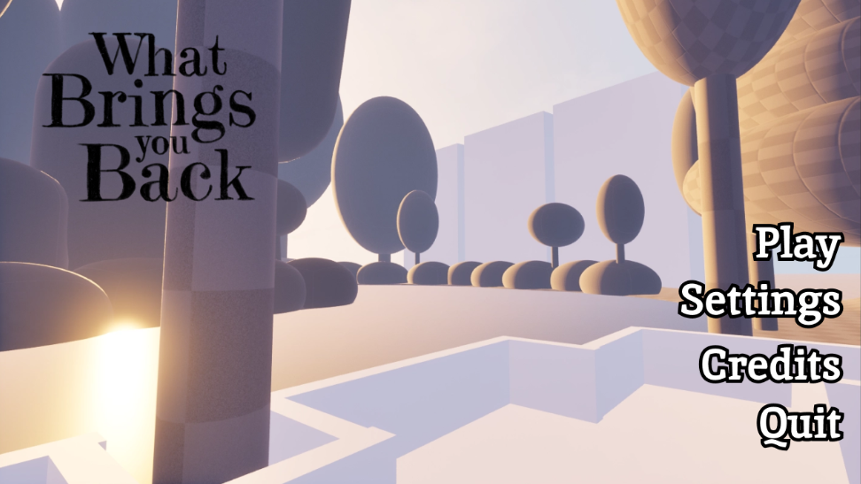
Settings Menu
In the image below we have the UI flowchart for the settings menu. There we can see that, in the settings menu, you can open different tabs. These different tabs are Accessibility tab, sound tab, controls tab. These tabs are for the player to adjust the settings of each correspondent category.
When in the settings menu you can also go back to the main menu.
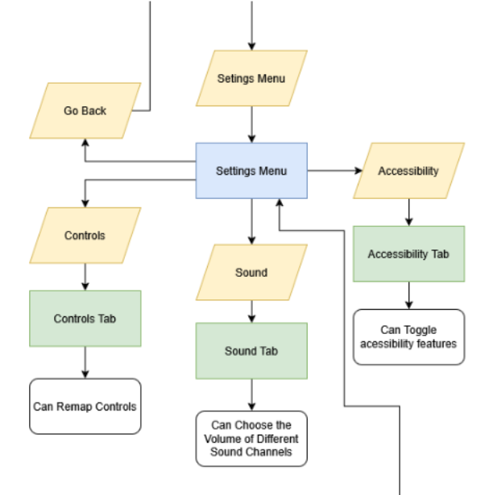
The image below illustrates these tabs better.
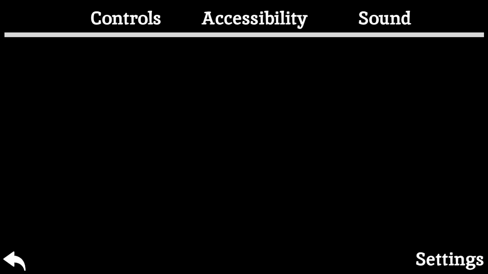
Play Game Selected
Then, in the image below, we have the UI flowchart for when the player selects to play the game.
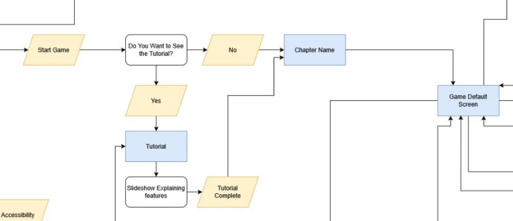
Ideally, after pressing to play the game, there will be a prompt asking if the player wants a tutorial or not. If the player chooses to do the tutorial, the tutorial will play and after the player will be directed to the game (we don’t have the tutorial implemented in the vertical slice).
Game
In the image below we have the possible interactions while in game. The player can pause the game, enter photo mode, enter the photo inventory, and enter the notebook.
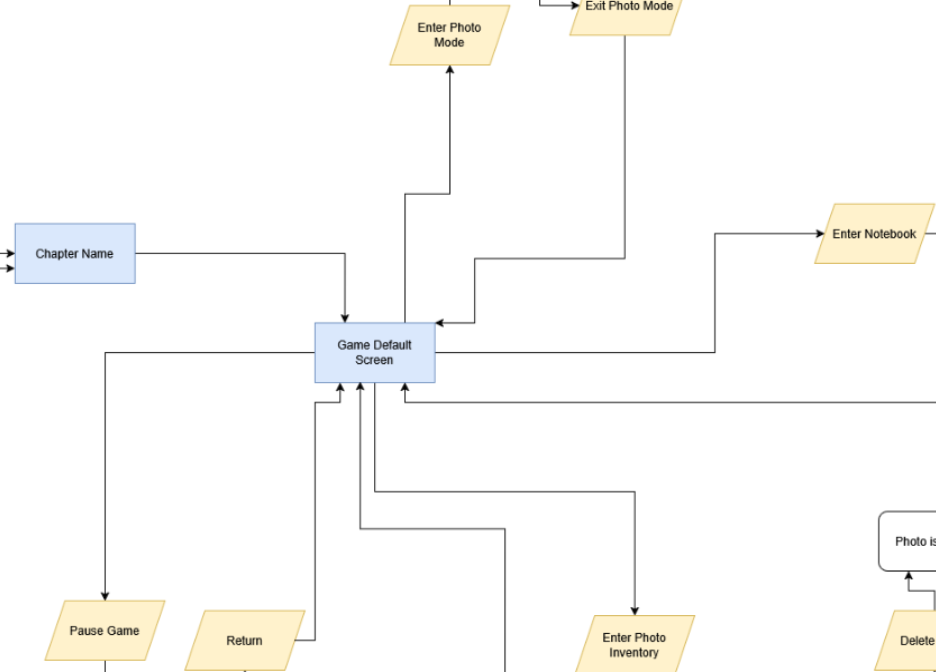
Pause Game
In the image below we have the flowchart for when the player pauses the game / enters the pause menu. There the player can return to the game, adjust settings and quit the game.
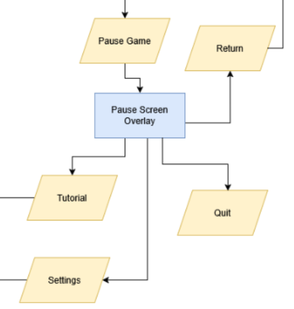
The image below shows how the pause menu would look like, more or less.
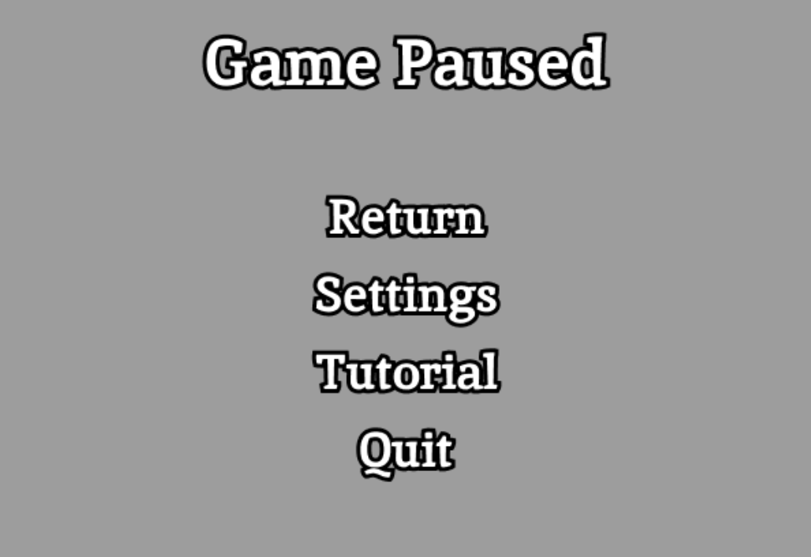
Enter Photo Mode
In the image below we have the Photo Mode UI flowchart. There we see that upon entering photo mode the player can: toggle the riddle, take photos, and exit photo mode.
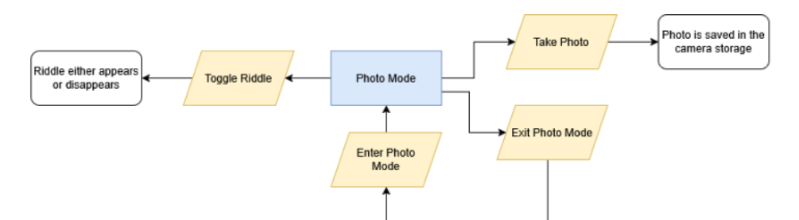
Enter Photo Inventory
In the image below we have the Photo Inventory UI flowchart. There we can see that in this Inventory the player can delete photos, or preview photos. While previewing photos, the player can choose to erase them, download it into their device, or exit photo preview mode.
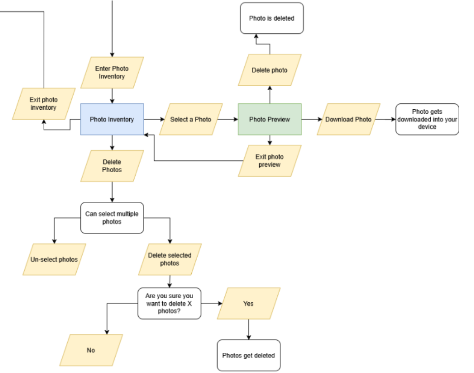
Enter Notebook
In the image below we have the Notebook UI flowchart. There we see that, while in the notebook, the player can move between pages, and the player can select which riddle they wanna do next
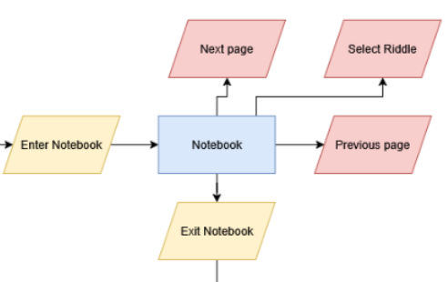
What have I learned with this project?
I really liked working on this project and the process that got me to our vertical slice. Since the previous university project I have learned so much more. I learned new game design concepts and methodologies, which helped me a lot to do better documentation and have a better and a process that fits me more.
I also got to explore the design process of a 3D game, since I’ve done way less 3D games than 2D games. And it was quite fun! The process isn’t necessarily different, the tools are the biggest difference. Another big difference is the need to take into account another dimension in your game, for which you need to come up with different design approaches.
Overall, I’d say this project helped me learn a lot and also understand how to work better across multiple game design disciplines. I also learned to document everything properly (not that before I didn’t know, but this time I did it way better!).
Wanna Know More About This Project?
Check Out Our Game Page!